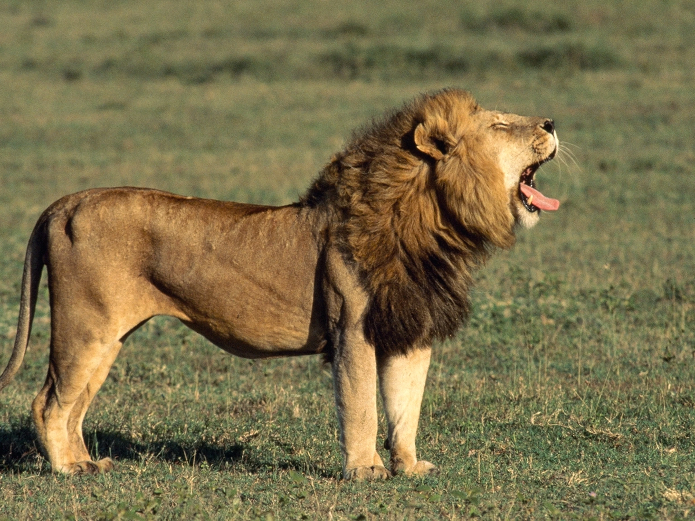
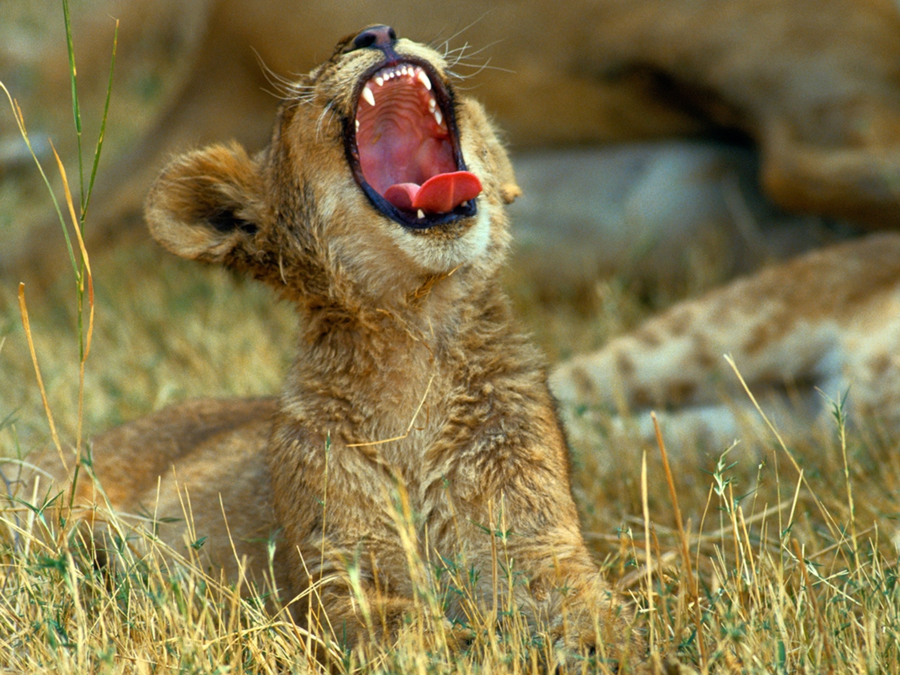

The lion (Panthera leo) is a large cat of the genus Panthera native
to Africa and India. It has a muscular, broad-chested body, short,
rounded head, round ears, and a hairy tuft at the end of its tail.
It is sexually dimorphic; adult male lions are larger than females
and have a prominent mane. It is a social species, forming groups
called prides. A lion's pride consists of a few adult males, related
females, and cubs. Groups of female lions usually hunt together,
preying mostly on large ungulates. The lion is an apex and keystone
predator; although some lions scavenge when opportunities occur and
have been known to hunt humans, the species typically does not
actively seek out and prey on humans.

The lion inhabits grasslands, savannas and shrublands. It is usually
more diurnal than other wild cats, but when persecuted, it adapts to
being active at night and at twilight. During the Neolithic period,
the lion ranged throughout Africa and Eurasia from Southeast Europe
to India, but it has been reduced to fragmented populations in
sub-Saharan Africa and one population in western India. It has been
listed as Vulnerable on the IUCN Red List since 1996 because
populations in African countries have declined by about 43% since
the early 1990s. Lion populations are untenable outside designated
protected areas. Although the cause of the decline is not fully
understood, habitat loss and conflicts with humans are the greatest
causes for concern.

One of the most widely recognised animal symbols in human culture,
the lion has been extensively depicted in sculptures and paintings,
on national flags, and in contemporary films and literature. Lions
have been kept in menageries since the time of the Roman Empire and
have been a key species sought for exhibition in zoological gardens
across the world since the late 18th century. Cultural depictions of
lions were prominent in Ancient Egypt, and depictions have occurred
in virtually all ancient and medieval cultures in the lion's
historic and current range.